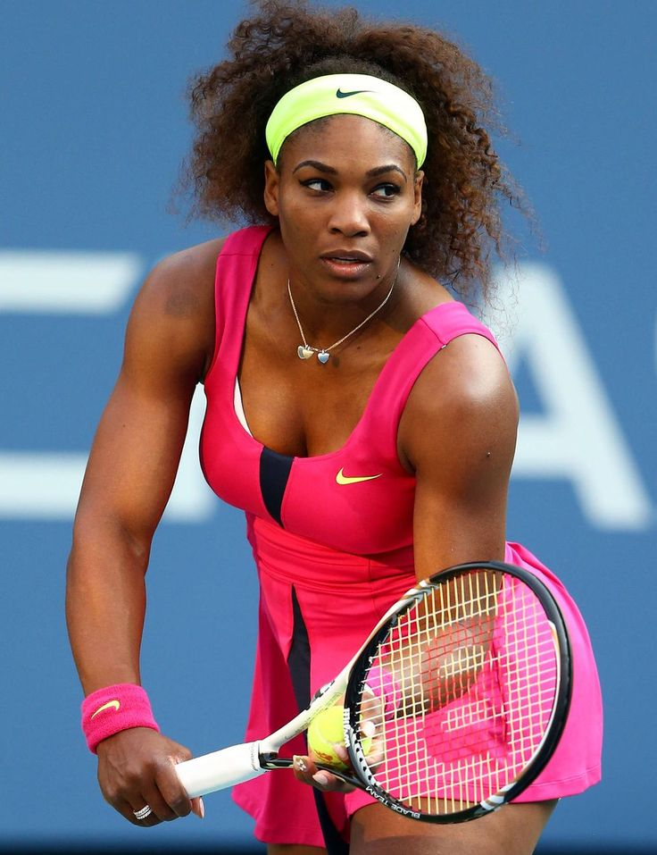

Introduction
Serena Williams is an American professional tennis player.
She is considered one of the greatest athletes in the history of tennis.
Early Life
- Full Name: Serena Jameka Williams
- Born: 26 September 1981
- Birthplace: Saginaw, Michigan, United States
Education
- Studied while training in tennis from a young age
- Coached by her father, Richard Williams
Career
- Turned professional in 1995
- Won multiple Grand Slam titles
- Known for powerful playing style and determination
Major Achievements
- Won 23 Grand Slam singles titles
- Former World No. 1 tennis player
- Olympic gold medalist
Challenges
- Faced injuries and strong competition during her career
Life Today
- Focuses on family, business, and inspiring young athletes
Conclusion
Serena Williams is a symbol of strength, determination,
and excellence in sports.
⬅ Back